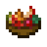
Fruit Salad can be crafted with a Bowl, two Berries, two Melon Slices, one Pumpkin Slice, and an Apple.
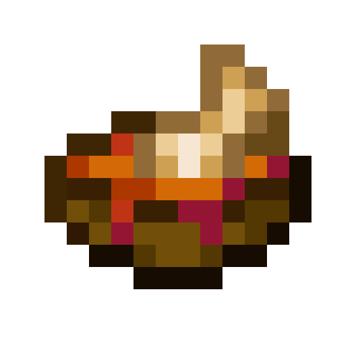
Fish stew is made by placing any raw fish, Tomato Sauce, and an Onion in a Cooking Pot.
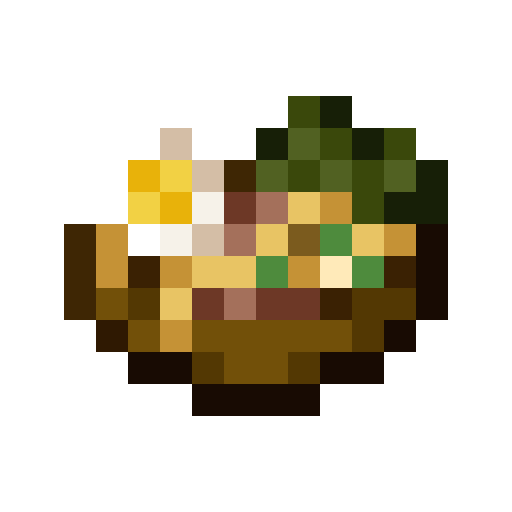
In a Cooking Pot, add a raw Egg, Raw Pasta, Dried Kelp and either Raw Bacon or Raw Porkchop.
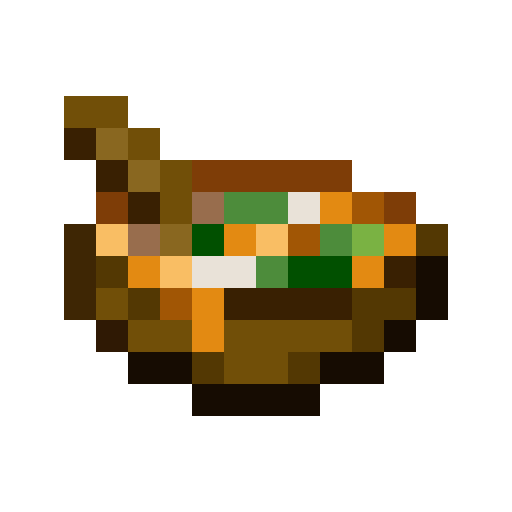
In a Cooking Pot, add a Pumpkin Slice and one each of the following: Milk, Cabbage, Bacon.
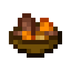
Beef Stew is made by placing Minced Beef or Raw Beef, Carrot, and Potato in a Cooking Pot.
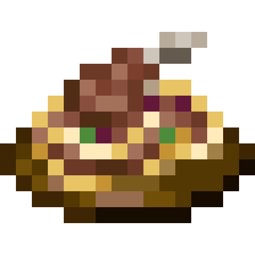
Pasta with Mutton Chop can be made by placing Raw Mutton Chops, Raw Pasta, and Tomato Sauce in a Cooking Pot.
Visible only on mobile version
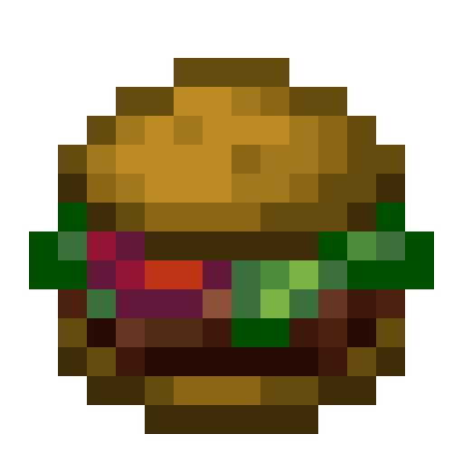
A hamburger can be crafted with one Bread, one Beef Patty, one Tomato, one Onion and a Cabbage Leaf.
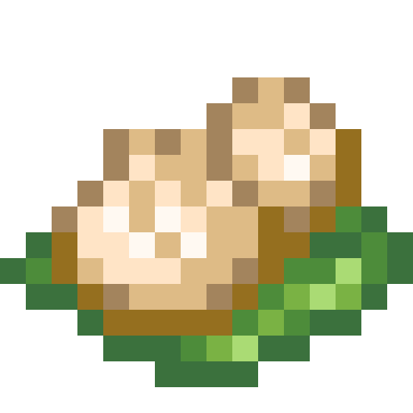
Dumplings can be made in a Cooking Pot with Wheat Dough, Cabbage or a Cabbage Leaf, Onion, and Raw Beef.
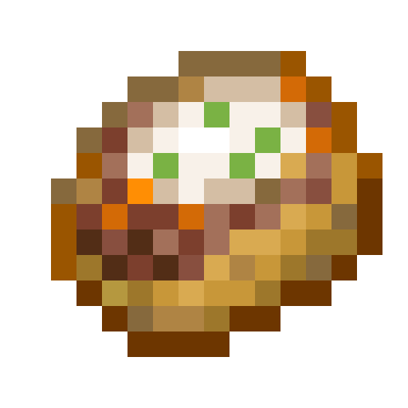
Stuffed Potato can be crafted by placing a baked potato, steak/beef patty, and milk bucket/milk bottle in a crafting grid.
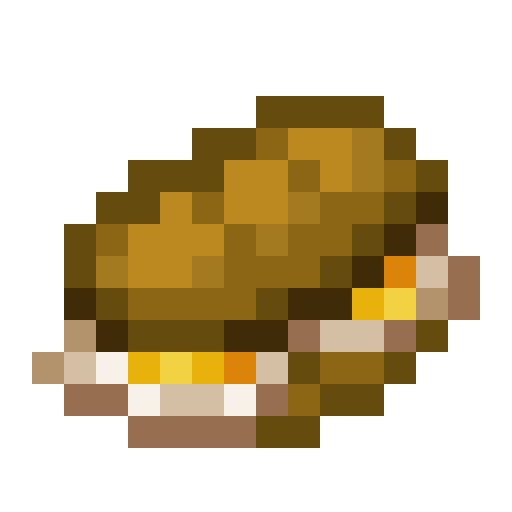
Egg Sandwiches can be crafted using one Bread and two Fried Eggs.
Barbecue on a Stick can be crafted with a Stick, Onion, Tomato, and any Cooked Meat.
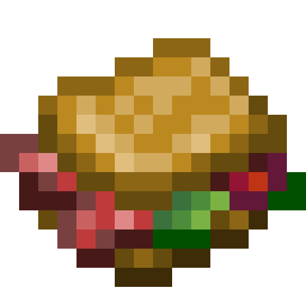
It can be crafted with one Bread, one Cooked Bacon, a Tomato, and a Cabbage
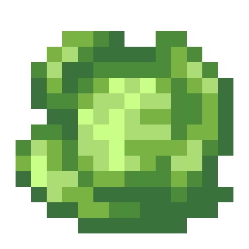
Cabbages can be obtained from their wild variant which naturally generate on beaches.
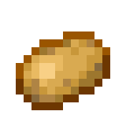
Wild Potatoes can be broken to obtain potatoes and can be found in cold climates
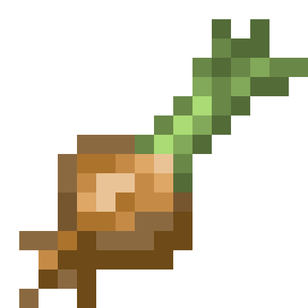
Onion appear as "a thick cluster of Allium flowers usually has an onion bulb under them."
They appear as "a flowering weed, with a conspicuous beige-colored base."
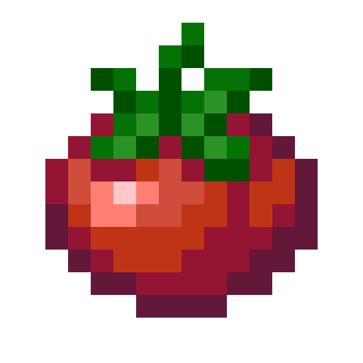
Tomatoes can be obtained via its wild variant in arid climates
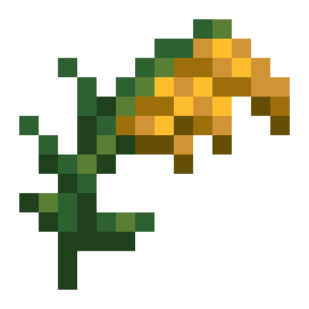
Rice can be found growing in swamp and jungle biomes as harvestable Wild Rice